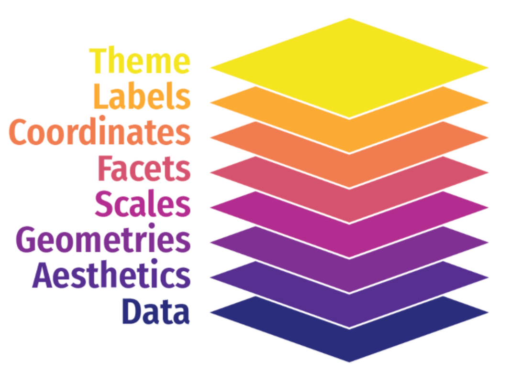
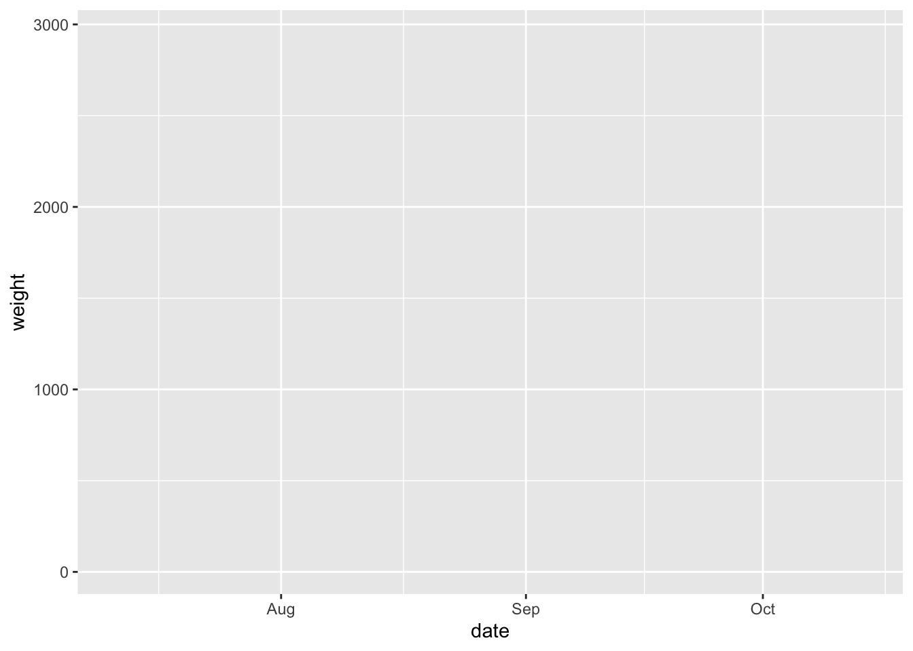
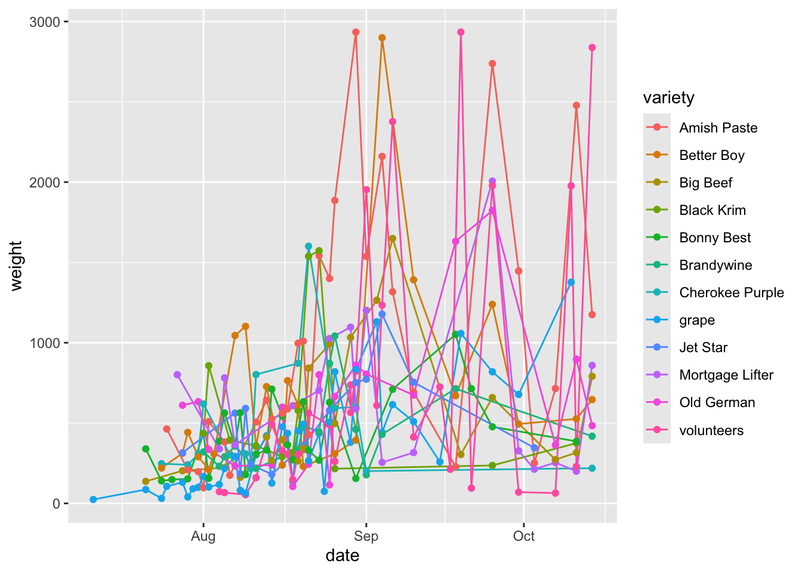
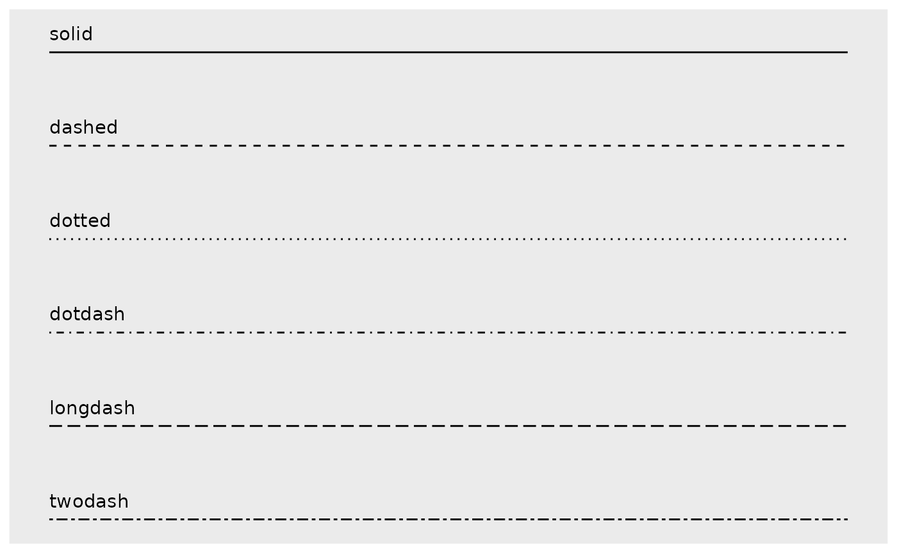

ggplot 101 (and 🍅)
Week 5
Introduction
The very popular R package ggplot2 is based on a system called the Grammar of Graphics by Leland Wilkinson which aims to create a grammatical rules for the development of graphics. It is part of a larger group of packages called “the tidyverse.”
What is the tidyverse?
The package ggplot2 is a part of a larger collection of packages called “the tidyverse” that are designed for data science. You can certainly use R without using the tidyverse, but it has many packages that I think will make your life a lot easier.
We can install just ggplot2 or install all of the packages in the core tidyverse (which is what I’d recommend since we will use the others too), which include:
dplyr: for data manipulationggplot2: a “grammar of graphics” for creating beautiful plotsreadr: for reading in rectangular data (i.e., Excel-style formatting)tibble: using tibbles as modern/better dataframesstringr: handling strings (i.e., text or stuff in quotes)forcats: for handling categorical variables (i.e., factors) (meow!)tidyr: to make “tidy data”purrr: for enhancing functional programming (also meow!)
We will be using many of these other packages in this course, but will talk about them as we go. There are more tidyverse packages outside of these core eight, and we will talk about some of them another time.
tl;dr Tidyverse has a lot of packages that make data analysis easier. None of them are required, but I think you’ll find many tidyverse approaches easier and more intuitive than using base R.
You can find here some examples of comparing tidyverse and base R syntax.
Installing ggplot & tidyverse
To install packages in R that are on the Comprehensive R Archive Network (CRAN), you can use the function install.packages().
install.packages("tidyverse")
install.packages("ggplot2")We only need to install packages once. But, every time we want to use them, we need to “load” them, and can do this using the function library().
tl:dr
install.packages()once,library()every time.
ggplot
The “gg” in ggplot stands for “grammar of graphics” and all plots share a common template. This is fundamentally different than plotting using a program like Excel, where you first pick your plot type, and then you add your data. With ggplot, you start with data, add a coordinate system, and then add “geoms,” which indicate what type of plot you want. A cool thing about ggplot is that you can add and layer different geoms together, to create a fully customized plot that is exactly what you want. If this sounds nebulous right now, that’s okay, we are going to talk more about this.

What can you do with ggplot?
A plotting framework

You can think about a ggplot as being composed of layers. You start with your data, and continue to add layers until you get the plot that you want. This might sound a bit abstract so I am going to talk through this with an example.
The data will be using was collected by Dr. Lisa Lendway from her home garden in 2020, and can be within her R package gardenR. She has collected information from June through October about how much of each garden crop she harvested each day. Since this is a Horticulture and Crop Science course, and I like gardening (and R), I thought we’d use it to learn about ggplot2.
We have previously used install.packages("name_of_package") to download packages, but this function only works for packages that are on the Comprehensive R Archive Network CRAN. Dr. Lendway’s package isn’t on CRAN, so we will use the helper package devtools to help us download it. The double colon :: syntax allows you to access a function from a particular package. In this case, we are using the package devtools and the function install_github() to download gardenR from Dr. Lendway’s github.
# tidyverse all day every day
library(tidyverse)
# if you don't have "devtools" and "gardenR", uncomment the lines below
# install.packages("devtools")
# devtools::install_github("llendway/gardenR")
# load the package "gardenR"
library(gardenR)What is in this garden_harvest dataset?
glimpse(garden_harvest)Rows: 781
Columns: 5
$ vegetable <chr> "lettuce", "radish", "lettuce", "lettuce", "radish", "lettuc…
$ variety <chr> "reseed", "Garden Party Mix", "reseed", "reseed", "Garden Pa…
$ date <date> 2020-06-06, 2020-06-06, 2020-06-08, 2020-06-09, 2020-06-11,…
$ weight <dbl> 20, 36, 15, 10, 67, 12, 9, 8, 53, 19, 14, 10, 48, 58, 8, 121…
$ units <chr> "grams", "grams", "grams", "grams", "grams", "grams", "grams…range(garden_harvest$date)[1] "2020-06-06" "2020-10-18"I am going to generate a quick plot to use to make the description of the parts of a plot a little bit more tangible. It’s totally ok if you don’t understand this code. Once we describe the parts, we are going to go through each one individually and see how each bit contributes towards the plot below.
# filter data to include only tomatoes
# filter() is a useful function from dplyr (part of tidyverse)
# it allows us to select observations based on their values
garden_harvest_tomato <- garden_harvest %>%
filter(vegetable == "tomatoes")
# plot
ggplot(data = garden_harvest_tomato, aes(x = date, y = weight, color = variety)) +
geom_line() +
geom_point(size = 1) +
facet_wrap(vars(variety)) +
scale_color_viridis_d() +
coord_cartesian() +
theme_classic() +
theme(legend.position = "none") +
labs(x = "Month, in 2020",
y = "Weight (g)",
title = "Total harvest weight of tomatoes by day in summer 2020",
subtitle = "Collected by Dr. Lisa Lendway (and from the package gardenR)")
The general parts in a ggplot object are:
- data: the dataframe you want to plot (here, we are filtering
garden_harvestto only include the data for tomatoes) - aesthetic mappings: which describe how the variables in your data are mapped to the visual ‘aesthetics’ you see in your plot (here, mapping date to the x-axis, weight to the y-axis, and color to variety)
- geometries or “geoms”: tell R what type of plot you want to make, typically start
geom_(here,geom_line()to make a line plot, and reminder, you don’t need to pick just one!) - scales: control how the variables are related to the visual properties (here, we are using
scale_color_discrete_d()to set the colors for the plot) - facets: generates small multiples of plots allowing easy visual comparison (here, making small line plots for each variety using
facet_wrap()) - coordinates: controls how x and y are visualized in your plot (here, using
coord_cartesian()which is actually the default, which just plots as Cartesian coordinates) - labels: adjusting how the labels of the plots look (here, labeling the x and y axis, providing a title and a subtitle)
- theme: controlling the non-data parts of your plots (here, using both
theme_minimal()which provides an overall theme, and usingtheme()to remove the legend which we don’t need because we have facets)
Syntax
Let’s go through the syntax in more detail now. I am going to introduce all the syntax, then we will focus this week through geoms, and do the rest next week. I want to give you an overview of what you can do with ggplot, then we will get into more detail.
Data
The first argument passed to your plot is the data. How did I know that? It’s in the documentation.
?ggplot()The simplest ggplot code you can write, just using the ggplot() function and indicating the data we want to use. Because data is the default first argument, you can actually omit the data = part of this code and it will work just the same.
ggplot(data = garden_harvest)
Why do we not see a plot? Well we haven’t told R what to plot! We are getting the first “base” layer of the plot.
You can also pipe |> or %>%, the data to the ggplot function. When reading code, you can interpret the pipe as “and then.” Here, take the garden_harvest_tomato data, and then, run ggplot(). Writing code in this way is my preference so I tend to code like this. We talked in more detail about the pipe last week, so you can go back there and read more if you like.
garden_harvest_tomato %>%
ggplot()
Still nothing. Well that’s what we would expect.
Aesthetic mappings aes()
Now that we’ve indicated our data, we can add aesthetics mapping so we can work towards actually see a plot. We want to make a line plot where on the x-axis we have the date (date), and on the y-axis we have how much tomato was harvested (weight).
garden_harvest_tomato %>%
ggplot(aes(x = date, y = weight))
So we have progressed from a blank plot, but we still do not have a plot by basically anyone’s defintion. Why not?
Even though we have indicated to R our data and aesthetic mappings, we have not indicated what precisely to do with our data. We have said what we want on x and y (and now we can see those labelled appearing) but we have not indicated what type of plot we want. And, we can do that in the next step, by adding a geom_.
Geoms geom_
Now let’s indicate what type of plot we want. In this example, we are going to make a line plot, and to do that we will use geom_line()
garden_harvest_tomato %>%
ggplot(aes(x = date, y = weight)) +
geom_line()
We have a plot! It’s not a really good plot, but its a plot and we can work from here.
You can see that what R has done is take each date, and plotted the total weight of tomatoes harvested on that day. What we can see from this part is that in the beginning of the season, there is little tomato production (this is not surprising to anyone who knows about horticulture or has grown tomatoes before), and production increases as the season progresses. We don’t see any harvest after mid-October which makes sense because Dr. Lendway lives in Minnesota and probably there was a frost that killed the plants (hence no more 🍅).
A note about aesthetic mappings now that we have introduced geoms -aes() can go in two places:
- in the
ggplot()call, and this means they will inherit for every layer of the plot - in a specific
geom_, and those aesthetics will only be for that specific geom.
So we can make the same plot we saw above by mapping aesthetics within geom_line().
garden_harvest_tomato %>%
ggplot() +
geom_line(aes(x = date, y = weight))
Let’s say we wanted to see how the harvest of different varieties looks over the summer? We can take the variable variety and map it to the aesthetic color.
garden_harvest_tomato %>%
ggplot(aes(x = date, y = weight, color = variety)) +
geom_line()
This is till not a beautiful plot, but you are able to see now how you can map a variable of the data (here, variety) to an aesthetic (color).
Another important thing to notice here is that now the data is grouped by variety. We are seeing 12 lines instead of 1. This happens automatically under the hood. This ‘grouping’ will be maintained across additional geoms because it is in the global aesthetic mappings for the plot.
We can also add more than one geom. Let’s try adding geom_point() so we can better see exactly which times were sampled in this dataset.
garden_harvest_tomato %>%
ggplot(aes(x = date, y = weight, color = variety)) +
geom_line() +
geom_point()
To more fully make the point about global vs aesthetic mappings, let’s look at an example.
garden_harvest_tomato %>%
ggplot(aes(x = date, y = weight)) +
geom_line(aes(color = variety)) +
geom_point()
Here, we can see that how the line layer is being grouped by variety, while the points are not. This is because the aesthetic mappings for one geom don’t inherit to the next one. If we want to also color points by variety, we need to either 1) set this as the global aesthetic mapping or 2) also set aes(color = variety) in geom_point() too.
garden_harvest_tomato %>%
ggplot(aes(x = date, y = weight)) +
geom_line(aes(color = variety)) +
geom_point(aes(color = variety))
Mapping vs. ‘setting’
If you want to map a variable to an aesthetic, it MUST be within the aes() statement. If you just want to change the color to “blue” for example, it should be outside the aes() statement. Look at the difference.
garden_harvest_tomato %>%
ggplot(aes(x = date, y = weight)) +
geom_line(color = "blue")
Look what happens if we put color = "blue" inside the aes() statement.
garden_harvest_tomato %>%
ggplot(aes(x = date, y = weight, color = "blue")) +
geom_line()
tl:dr if mapping a variable to an aesthetic, inside
aes(), if not, then outside.
More about aesthetics
It’s hard to talk about how to map to aesthetics before you add a geom, which is why this content is in this section.
So far we have talked about mapping aesthetics to x, y, and color. Below is a list of other aesthetics you can map to:
color (or colour if that suits you better) and fill
In general color controls the outside/line, and fill controls the inside of a shape. Some geoms will work only with color or fill, and work with both. There are a millions ways to control the color, including by using the R color names (don’t forget to put them in quotes), or hex codes (e.g., “FF0000” for red). There are a ton of different color palettes in R like color brewer and I’d recommend you to think about using colors that are color blind friendly like viridis. Picking a color palette allows continuity across your presentation/manuscript, and can help in the interpretation of your data (e.g., having a divergent scale where darker means more abundant, or pairing colors like light and medium blue to indicate which samples have some kind of relationship).
linetype
You can change the style of a line based on a variable
garden_harvest_tomato %>%
ggplot(aes(x = date, y = weight)) +
geom_line(aes(linetype = variety))
Wow this is a disaster but you can see the point about mapping variables to linetype.
Here are some different linetypes you can select from:

size
You can also map variables to size. This could be useful if you wanted to say make your points bigger when a fold change is bigger, or bigger when a value is more significant. Below is an example of mapping weight to size in our example dataset.
garden_harvest_tomato %>%
filter(variety %in% c("Mortgage Lifter", "Brandywine")) %>%
ggplot(aes(x = variety, y = date, size = weight)) +
geom_point()
shape
You can also map variables to shape. This could be useful if you want points of one treatment on a scatterplot to be circles, a second treatment triangles, etc. You can combine mapping to shape and color together which is good for those who are concerned about black and white printability, but also easy differentiability when viewed on a computer.

Shapes 0-20 accept only a color aesthetics. Shapes 21-25 accept both a color and fill aesthetic, where color controls the color of the outside of the shape, and fill controls the color of the inside of the shape. I basically always use shapes 21-25 (actually I almost always just use 21).
alpha
Setting alpha allows you to map a variable to the transparency of a part of your plot. So for example, if you had a correlation plot, you could make a strong correlation really dark, while a weak relationship lighter. Alpha can range between 0 and 1, where 0 is totally transparent, and 1 is completely opaque.
The next sections we will go over in more detail next week but I want to introduce the idea of these additional layers very briefly.
Scales scale_
Using scales allows you to control how the data are linked to the visual properties of your plot.
Scales allow you to pick colors, shapes, alphas, lines, transformations (e.g. scaling your axes to a log scale), and others. You can also use scales to set the limits of your plots.
Facets facet_wrap() and facet_grid()
Faceting allows you to look at your plots using small multiples, to compare plots that might be otherwise crowded or hard to interpret.
Faceting can be done using facet_wrap() or facet_grid().
Coordinates coord_
Often the coordinate system used for your plot will be a simple Cartesian system using x and y. But sometimes, like for making maps or other specialized plots, you will want to change how x and y map to your coordinate system.
Labels labs()
Having good labels helps your reader (and you, when you come back to the plot in the future) understand what its all about.
In the labs() function, you can indicate:
xfor the x-axis labelyfor the y-axis labeltitlefor a titlesubtitlefor a subtitle underneath your titlecaptionfor a caption
In theme() you can change characteristics of these labels like their size, fonts, justfication, etc.
Themes theme() and theme_
Themes will control all the non-data parts of your plot. There are some pre-set “complete” themes that you can recognize as they’ll be called theme_XXX(), and you can adjust any theme parameters by setting parameters within theme(). There are probably 50 parameters you can set within theme() and they include text size, axis label orientation, the presence of a legend, and many others.